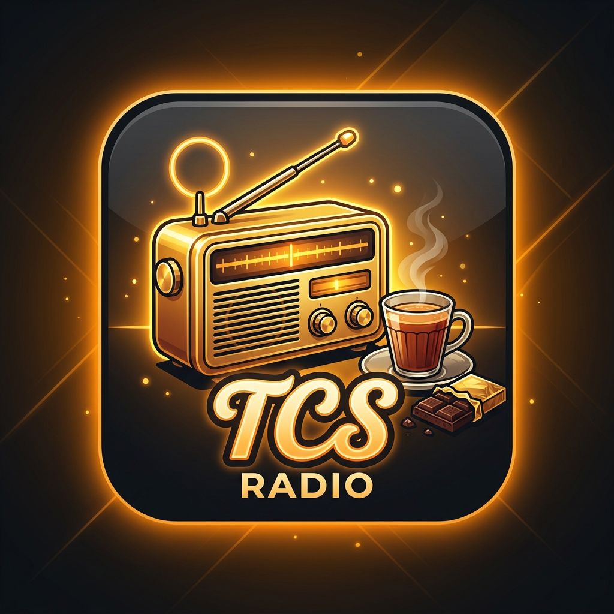

🏢
Office Hours
Warm 2000s melodies for focused work, late timesheets, and a well-earned chai break.
TCS Radio • Total Chill Station • Retro Bollywood & Ambient Radio
टाइम्सशीट भर दी भाई? चलो अब चाय पीते हैं और पुराने गाने सुनते हैं!
About TCS Radio
TCS Radio is a free, fan-made listening space by Umair for the sounds of everyday India: the office desk, the auto ride, the highway, and the chai tapri. Open the playlist sidebar, choose a mood, pick a song, and settle in — no account or sign-up needed.
Warm 2000s melodies for focused work, late timesheets, and a well-earned chai break.
Jhankar beats and cassette-era favourites with the energy of an auto ride through busy streets.
Punjabi and Bollywood road anthems for long drives, dhaba stops, and full-volume nostalgia.
Monsoon romance, roadside classics, and gentle baarish ambience whenever you need a slower mood.
FAQ
A free, fan-made radio by Umair for 2000s Bollywood, Indipop, highway, auto, monsoon, and chai-tapri moods. No account is needed.
Tap the ☰ Playlist button on the player deck to open the sidebar. Select a station tab, then choose a song from its list — the hero stays focused on the music.
Always visible on the player deck — play or pause, skip, shuffle, seek, volume and the 📺 video toggle are ready from the moment the page loads.
Yes. When the current station finishes, TCS Radio moves to the next station automatically so the listening session can keep going.
Yes. Use 🎵 Add / Remove Songs in the Support strip above the footer. Requests go directly to Umair, and removal requests are reviewed promptly.
Tap ❤️ Support Us in the same strip — sharing TCS Radio with a friend keeps the station free and ad-free.
Baarish adds optional rain sound and on-screen rain. TCS Careers opens a light-hearted hiring message — it is not a real job application or payment link.
Server chalta hai chai-paani aur aapke pyaar se 😄
No ads, no QR, no gullak — bas aapka pyaar. Sunte raho, share karte raho! ❤️
100% maza • 0% investment • 0% scam
Add • Remove • Feedback — direct line, 24h reply, no reports
Thank you! Your request is with Umair.
